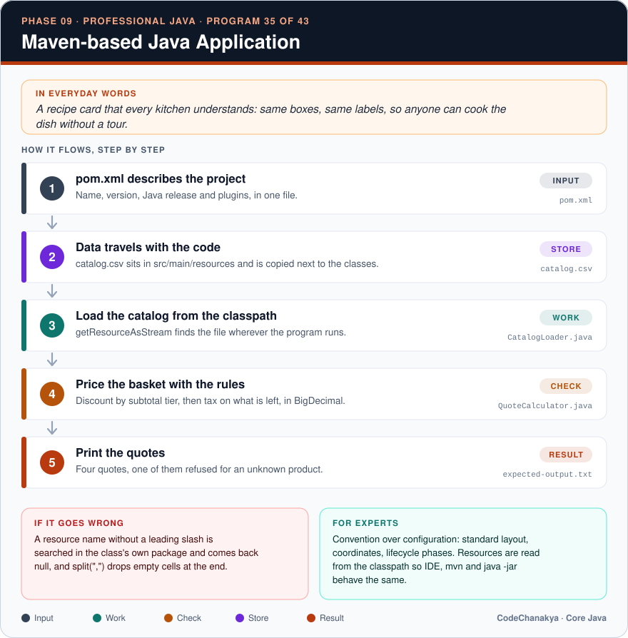

Phase 09 · Professional Java · Program 35 of 43
Maven-based Java Application
The problem
A folder of .java files and a script works for ten files. A real project has data files that must travel with the code, libraries from other people and teammates who all need to build it the same way.
Maven answers with a convention: every project has the same layout and one description file, pom.xml. This program is a small quote calculator, simple on purpose, so the project around it is what you study.
See the flow
The whole program as one picture. Read it top to bottom; the colour of each card says what kind of step it is.


If you are new to coding
A recipe card that every kitchen understands: same boxes, same labels, so anyone can cook the dish without a tour.
If you are learning
Follow the numbered cards from top to bottom. Open the file named on each card, run the program, and match its output to the last card.
If you are experienced
Convention over configuration: standard layout, coordinates, lifecycle phases. Resources are read from the classpath so IDE, mvn and java -jar behave the same.
Text version of the flow
- pom.xml describes the project (input): Name, version, Java release and plugins, in one file.
- Data travels with the code (store): catalog.csv sits in src/main/resources and is copied next to the classes.
- Load the catalog from the classpath (work): getResourceAsStream finds the file wherever the program runs.
- Price the basket with the rules (check): Discount by subtotal tier, then tax on what is left, in BigDecimal.
- Print the quotes (result): Four quotes, one of them refused for an unknown product.
Read in this order
- 1pom.xmlCoordinates, the Java release and two plugins.
- 2catalog.csv, CatalogLoader.javaData in src/main/resources, read from the classpath.
- 3QuoteCalculator.javaDiscount first, then tax, in BigDecimal.
- 4Main.javaFour quotes, one refused.
The code
package com.codechanakya.quotes; import java.math.BigDecimal; import java.math.RoundingMode; import java.util.ArrayList; import java.util.List; /** * Prices a list of items. * * <p>Rules: a subtotal of 1000 or more earns 10 percent off, 500 or more earns 5 percent off. * The discount is applied to every line first, and tax is worked out on the discounted amount, * because that is the amount the customer actually pays for. */ public class QuoteCalculator { static final BigDecimal TEN_PERCENT_FROM = new BigDecimal("1000"); static final BigDecimal FIVE_PERCENT_FROM = new BigDecimal("500"); private final Catalog catalog; public QuoteCalculator(Catalog catalog) { this.catalog = catalog; } public Quote price(List<QuoteItem> items) { if (items.isEmpty()) { throw new IllegalArgumentException("A quote needs at least one item."); } BigDecimal subtotal = BigDecimal.ZERO; for (QuoteItem item : items) { Product product = catalog.get(item.sku()); subtotal = subtotal.add(product.unitPrice().multiply(BigDecimal.valueOf(item.quantity()))); } BigDecimal rate = discountRateFor(subtotal); List<QuoteLine> lines = new ArrayList<>(); for (QuoteItem item : items) { Product product = catalog.get(item.sku()); BigDecimal full = product.unitPrice().multiply(BigDecimal.valueOf(item.quantity())); BigDecimal net = money(full.multiply(BigDecimal.ONE.subtract(rate))); BigDecimal tax = money(net.multiply(product.taxRate())); lines.add(new QuoteLine(product, item.quantity(), net, tax)); } return new Quote(lines, money(subtotal), rate, money(subtotal.multiply(rate))); } static BigDecimal discountRateFor(BigDecimal subtotal) { if (subtotal.compareTo(TEN_PERCENT_FROM) >= 0) { return new BigDecimal("0.10"); } if (subtotal.compareTo(FIVE_PERCENT_FROM) >= 0) { return new BigDecimal("0.05"); } return BigDecimal.ZERO; } private static BigDecimal money(BigDecimal value) { return value.setScale(2, RoundingMode.HALF_UP); } }
package com.codechanakya.quotes; import java.io.BufferedReader; import java.io.IOException; import java.io.InputStream; import java.io.InputStreamReader; import java.math.BigDecimal; import java.nio.charset.StandardCharsets; import java.util.ArrayList; import java.util.List; /** * Reads the product catalog from a file on the classpath. * * <p>The file lives in {@code src/main/resources}. Maven copies everything in that folder * next to the compiled classes, so the code finds it with {@code getResourceAsStream} * and never needs to know where the project sits on disk. That is why the program works * the same from an IDE, from {@code mvn}, and from a packaged jar. */ public final class CatalogLoader { private CatalogLoader() { } /** Loads a catalog from a classpath resource such as {@code /catalog.csv}. */ public static Catalog fromResource(String resourceName) { try (InputStream in = CatalogLoader.class.getResourceAsStream(resourceName)) { if (in == null) { throw new IllegalStateException("Resource not found on the classpath: " + resourceName + " (is src/main/resources on the classpath?)"); } return read(new BufferedReader(new InputStreamReader(in, StandardCharsets.UTF_8))); } catch (IOException e) { throw new IllegalStateException("Could not read " + resourceName, e); } } static Catalog read(BufferedReader reader) throws IOException { List<Product> products = new ArrayList<>(); String line; int lineNumber = 0; while ((line = reader.readLine()) != null) { lineNumber++; if (lineNumber == 1 || line.isBlank()) { continue; // header and empty lines } String[] cells = line.split(",", -1); // -1 keeps empty cells at the end of a line if (cells.length != 4) { throw new IllegalStateException("Line " + lineNumber + ": expected 4 columns but found " + cells.length); } try { products.add(new Product(cells[0].trim(), cells[1].trim(), new BigDecimal(cells[2].trim()), new BigDecimal(cells[3].trim()))); } catch (NumberFormatException e) { throw new IllegalStateException("Line " + lineNumber + ": price or tax is not a number", e); } } return new Catalog(products); } }
Only the key files are shown. The rest are in the repository.
Run it
$ ./run.sh --check
Catalog loaded from the classpath: 6 products
Quote A
Notebook x2 net 240.00 tax 12.00 gross 252.00
Pen Box x3 net 136.50 tax 6.83 gross 143.33
Subtotal : 376.50
Discount : 0.00 (0%)
Tax : 18.83
Total : 395.33
Quote B
Wireless Mouse x1 net 719.10 tax 129.44 gross 848.54
Keyboard x1 net 1349.10 tax 242.84 gross 1591.94
USB Cable x2 net 538.20 tax 96.88 gross 635.08
Subtotal : 2896.00
Discount : 289.60 (10%)
Tax : 469.16
Total : 3075.56
Quote C
Desk Lamp x1 net 617.50 tax 74.10 gross 691.60
Notebook x1 net 114.00 tax 5.70 gross 119.70
Subtotal : 770.00
Discount : 38.50 (5%)
Tax : 79.80
Total : 811.30
Quote D
Rejected: Unknown product: X-999
OK: output matches expected-output.txt
This is the real output from OpenJDK 21.0.13 on Linux. The pom.xml is well-formed, but Maven itself has not been run on this program yet. It has not yet been run on Java 25, Windows or macOS.
Try it yourself
- BeginnerAdd a Stapler to catalog.csv and quote four.
- BeginnerAdd a 15 percent tier from 3000.
- BeginnerPredict the jar name after changing the version.
- IntermediateAdd Catalog.byPrice().
- IntermediateRefuse a quantity above 100.
- ChallengeLook inside the jar and filter a version into the output (needs Maven).
Hints and solutions are in the exercises and solutions folders. Try first.
Break it on purpose
Three files: a resource name without the leading slash, money in a double, and split(",") dropping empty cells. The README in the broken folder explains each one.